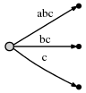
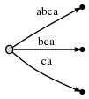
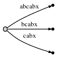
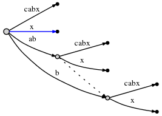
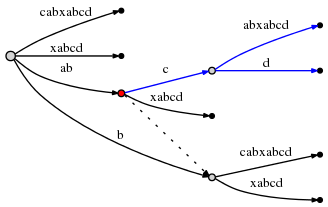
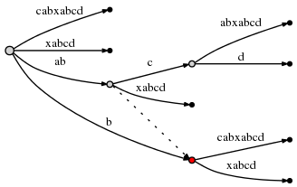
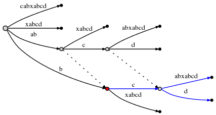
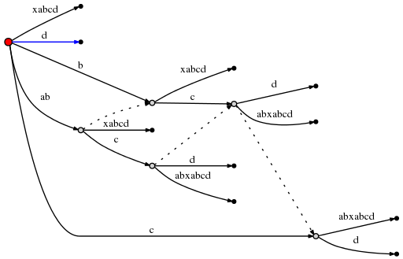

Trie and Suffix tree
Table of Contents
http://marknelson.us/1996/08/01/suffix-trees/
http://stevehanov.ca/blog/index.php?id=120
Trie
A tree for storing strings in which there is one node for every common prefix. The strings are stored in extra leaf nodes.1
 A trie for keys "A","to", "tea", "ted", "ten", "i", "in", and "inn".
A trie for keys "A","to", "tea", "ted", "ten", "i", "in", and "inn".
suffix tree
A compact representation of a trie corresponding to the suffixes of a given string where all nodes with one child are merged with their parents.2
 Suffix tree for the text BANANA.
Suffix tree for the text BANANA.
Ukkonen's suffix tree algorithm
Ukkonen's paper on the algorithm: On–line construction of suffix trees
以下对Ukkonen algorithm的总结
- 前言
- 不同于搜索tire，边标识不是一个字符。而是用一对整数对
[from,to]来标识。它们指向字符串。如此，每个边上有一个任意长度的字符串标签，但是之占用 \(O(1)\) 空间。
- 不同于搜索tire，边标识不是一个字符。而是用一对整数对
- 基本概念
首先演示用一个特别简单的字符串如何创建suffix tree，没有重复字符的字符串：
abc
整个算法从左往右一步步进行。一个字符一步，所以总的操作数是 \(O(n)\) .
从左开始，先插入字符a，通过创建从root node(在左边）到leaf的边，并加上标签
[0,#],指代这个边表示从位置0到 当前结束点 为尾的子字符串，使用符号#表示 当前结束点 ，这里在位置1（a的右边）所以我们有了一颗初始的tree，如此：

他表示：

现在进行到位置2(
b的右边). 我们的目标是在每一步中插入到目前位置所有的suffixes.我们做到这些通过：- 扩展当前
a的边到ab - 为
b插入一个新的边
我们的描述如下图：

而它表示：

我们发现两样东西：
- 对边
ab的表示同初始tree[0,#]一样, 它的意义自动得到改变，因为我们更新了当前位置#从1到2。 - 每条边占用 \(O(1)\) 的空间，因为它只包含2个指向字符串的指针，无论它表示多少个字符。
然后我们再次增加位置来更新tree，增加一个字符
c到每个存在的边并且为新suffixc插入一个新的边。描述如下：

而它表示： 
我们发现：
- 每一步后tree是到当前位置正确的suffix tree
- 总共的步数和文本的字符数相同
- 每一步总的算法 \(O(1)\) .因为所有已存在的边通过后移的
#来自动更新, 然后为最后一个字符插入一条新的边，所有操作在 \(O(1)\) 复杂度完成。所以对于长度n的字符串，只需要 \(O(n)\) 的复杂度。
- 扩展当前
- 第一个扩展：简单的重复
现在看一个更现实的字符串：
abcabxabcd
它以之前例子的
abc起始，然后重复ab并紧跟x，然后重复abc并紧跟d.步骤从1到3： 经过开始的3个步骤，我们得到之前例子的tree：

步骤4： 移动
#到位置4. 隐性更新所有边到这样： 然后我们需要插入当前步骤最后的suffix
a到root。在做这前，引入 2个变量 (除了
#）：- active point ，一个三元组（
active_node,active_edge,active_length) remainder，是一个整数表明还有多少个suffixes需要被插入
这两个实际的意义之后将明了，但现在我们可以这么说：
- 在
abc这个简单的例子中， active point总是(root, '\0x', 0)，也就是active_node是 root node,active_edge是null字符‘\0x’，而active_length是0。这个的作用就是每一步插入的新边都在root node那作为全新创建的边插入。之后我们将知道为什么用三元组表示这个信息是必要的。 remainder在每一步开始总是被设置为1。意思是在每一步最后我们需要插入suffixes的个数是1（总是最后那个字符）。
现在开始改变。当我们在root插入当前最后的字符
a, 我们注意到已经有一条以a为起始的边，也就是abca. 在此种情况下，我们做如下：- 我们 不 在root node插入新的边
[4,#]。而我们注意到suffixa已经在tree中。它结尾在一个长边的中间，但是我们并不被它干扰。我们把它留在那。 - 我们 设置 active pioint 为
(root,'a',1)。这个意思是active point 现在在从root node中以a为起始点的边的中间某个位置，具体就是那条边的位置1后。我们注意到这条边只是用它的第一个字符a来指代。这样足够指定那条边是因为边已特定字符起始的是唯一的。 - 同时增加
remainder，所以在下一步开始它将是2.
注意： 当 最后需要插入的suffix被发现已经在tree中存在, tree本身 不会改变 (只更新active point和
remainder). 到目前位置 tree并没有正确描述suffix tree，但它包含所有suffixes（因为最后的suffixa隐性的被包含）。所以除了更新这些参数（所欲都是固定长度，所以是 \(O(1)\) ）， 没有其他操作 需要被做在此步。步骤5: 更新目前位置
#到5. 自动更新tree到这样：
因为 remainder 是2.需要插入当前位置2个最后的suffixes：
ab和b。这基本是因为：- 之前步骤的suffix
a从没适应的插入。所以它被 保留下来 ，然后因为我们进行到下一步，它现在从a增长到ab。 - 并且需要插入新的最终边
b.
实际上它意味我们去到 active point （指向
abcab中a的后边），并插入当期最后的字母b。 但是 再次b也已经在同样的边里了。所以，再次，我们不改变这课tree。我们只是：
- 更新active point成
(root, 'a', 2)(不变的node和edge，但现在指向b的后面） - 增加
remainder到3因为我们并没有在上一步插入最后的边，也没有在一步插入最后的边。
澄清： 在当前步，我们需要插入
ab和b。但因为ab已经被发现，我们更新 active point并没有试图插入b。为什么？因为如果ab在tree 中， 它的 每个suffix （包含b）必定也在tree中。也许只是 隐式 的，但是它必定在那，因为到目前我们建立tree的方式如此。进行到
step 6通过增加#。tree自动更新到：
因为
remainder是 3 ，我们需要插入abx，bx和x。active point告诉我们ab在哪里结尾，所以我们只需要跳到哪里并插入x。的确，x不再那里，所以我们分叉边abcabx并插入一个内在node：
边描述的仍然是指向文本的指针，所以分叉和插入一个内在node能在 \(O(1)\) 时间内完成。
所以我们需要处理
abx并减少remainder到2。现在我们需要插入下一个剩下的suffixbx。但是在做这之前我们需要更新active point。对于这种情况的规则，在分叉并插入一条边，将被称为 Rule 1 ，并且它对只对actvie_node是root时适用。rule 1如下：从root插入之后。
active_node仍然是rootactive_edge被设置成新插入的suffix的首字符，比如bactive_length被减少1
因此，新的active-point三元组
(root, 'b', 1)显示下一个插入在bcabx边的后面1个字符下，比如在b之后。我们去识别插入点能在 \(O(1)\) 完成并检查x是否已经存在。如果它存在，我们就这样结束此步。但x不存在，所以我们通过分列此边来插入它：
再次这需要 \(O(1)\) 的时间并且我们更新
remainder到1和active point到(root, 'x', 0)如rule 1所述。但是我们还需要再做一件事。我们将这称为 Rule 2:
如果我们分叉一条边并插入一个新的node，而且如果那 不是 这一步中第一个创建的node，我们连接之前插入的node和这个新node通过一个特别的指针，叫做 suffix link 。我们之后能知道为什么它有用。这里suffix link由如下虚线表示。

我们仍然需要插入当前最后的suffix
x。因为active node的active_length变成了0,所以最后直接在root那插入。因为在root node没有以x为起始的边，我们插入一条新边：
正如上图，在此步所有剩余的插入得到执行。
我们通过设置
#=7进行到 第7步 ,自动把下一个字符a增加到所有leaf 边。然后试图插入新的最后字符，并发现已经在那里，所以不做插入，只更新 active point到(root,'a',1)在 第8步 ，
#=8，我们增加b,并如前所述，这仅仅意味更新active point到(root, 'a', 2)并增加remainder，不用做其他操作因为b已经存在。 然而 ,我们注意到（在 \(O(1)\) 时间复杂度内） active point 现在在一条边的末尾。我们通过设置它为(node1, '\0x', 0)来反应。这里使用node1反映以ab边结尾的内部node。然后， 在 第
#=9步 ,我们需要插入'c'并将帮助我们明白最后的技巧：第二个扩展：使用suffix links
一如既往，
#的更新自动增加c到leaf边，并且我们到active point去检查是否我们能插入 'c'。结果是‘c'已经存在，所以我们设置active point到(node1, 'c', 1),增加remainder并且不做其他。现在在 第
#=10步 ,remainder是4，然后所以我们将先插入abcd通过在active point插入d。试图花费 \(O(1)\) 时间复杂度在active point插入
d引起边的分叉：
在上图，边的分叉开始执行的
active_node用红色标出。这里给出最后的规则， Rule 3:从不是root node的
active_node上边分叉后，我们沿着这个node的suffix link，如果存在这么个link，重置active_node为它指向的那个node。如果没有suffix link，设置active_node为root，active_edge和active_lenght不变。所以现在active point是
(node2, 'c', 1)。并且node2在下面标记为红色：
因为插入
abcd完成，我们减少remainder到3并且进行当前步骤剩下的 suffix，bcd。Rule 3已经把active point设置成正好的node和边，所以插入bcd只要简单的在active point后插入最后的字符d。操作这个促使又一条边分裂， 依据rule2 ，我们必须创建从之前插入的node 到新的node之间的suffix link:

我们发现：



[[./files/suffix/ [[./files/suffix/
- active point ，一个三元组（
Ukkonen's suffix tree algorithm codes
More reference
- Suffix Trees by Sartaj Sahni
- Mark Nelson's great Fast String Searching With Suffix Trees (C++) explains Ukkonen's linear-time algorithm
- Ukkonen's Suffix Tree Implementation in C Part 1 Part 2 Part 3 Part 4 Part 5 Part 6
- Strmat - a variety of string matching and pattern discovery algorithms (C)
- libstree is a generic suffix tree implementation, written in C
- The Algorithm Design Manual summarize the Suffix Trees